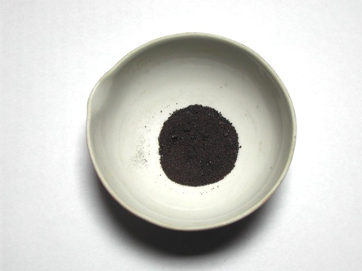
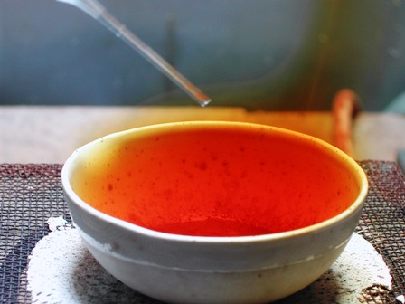
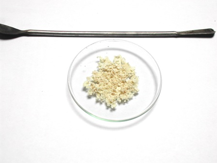

C'è stato un periodo a cavallo tra gli anni quaranta e cinquanta dello scorso secolo in cui impazzavano certi ingenuissimi film di fantascienza con razzi a forma di supposta e dischi volanti fatti esattamente come due piatti da minestra sovrapposti.
Per gli altrettanto ingenuissimi spettatori la Luna (Selene) era abitata dai "Seleniti", tanto che più tardi (nel '62) pure Modugno, sulla spinta dei primi voli spaziali, ci fece una canzoncina, quella che ripeteva: -Selene ene a', come è bello stare qua. Selene ene a', il tuo peso sulla Luna è la metà della metà-... eccetera.
(Tutti, specialmente i più giovani che leggono questo blog, la conosceranno di sicuro).
Ecco, questi presunti abitanti rappresentano il primo tipo di seleniti di cui voglio parlare.
Se fossero verdi, avessero le antenne e il naso a trombetta, non lo so.
Il secondo tipo di seleniti, con molta minor fantasia e in concreto, li ho incontrati anche stamattina (!).
---°°°OOO°°°---
Parlando un po' più seriamente, i seleniti sono i sali dell'acido selenioso, H2SeO3, e poichè anche questo elemento (il selenio) mi è simpatico ho preparato un pochino di quell'acido sacrificando un residuo di selenio che avevo estratto con una discreta fatica da un bel pigmento colorato. Forse qualcuno se ne ricorderà.
Il selenio si può ossidare ad acido selenioso per mezzo dell'acido nitrico, secondo la reazione:
Se + 4 HNO3 → H2SeO3 + 4 NO2 + H2O
Secondo il Brauer per ottenere un prodotto puro occorrerebbe disidratare l'acido selenioso ottenuto con la prima reazione
H2SeO3 → SeO2 + H2O
riscaldando l'acido e raccogliendo l'anidride seleniosa SeO2 con ripetute sublimazioni e quindi reidratare opportunamente.
Naturalmente io mi sono fermato alla prima fase, non interessandomi la purezza analitica del prodotto ma solo la constatazione della possibilità di ottenere successivamente qualche selenito una volta salificato l'acido grezzo con KOH.
Ho posto in una capsulina un paio di grammi di selenio ed aggiunto goccia a goccia acido nitrico al 65%; la reazione è esotermica ed immediata e si ha abbondante sviluppo di ipoazotide, lavorare quindi in ambiente ben aerato.


Si continua l'aggiunta scaldando cautamente e regolando l'aggiunta di (poco) HNO3 in più porzioni fin che tutto il selenio sia ossidato, ovvero fino alla scomparsa dei granelli scuri.
A questo punto continuare il riscaldamento a piccola fiamma e mescolando per far evaporare l'acido nitrico in eccesso.
Si otterrà alla fine, andando a secchezza ma assolutamente senza mai surriscaldare, un solido bianco molto igroscopico costituito da acido selenioso.

Nel mio caso il colore è leggermente rosato perchè sono partito da un selenio di autoproduzione, non perfettamente puro.
Aumentando il riscaldamento quest'acido si disidrata facilmente e comincia ad emettere fumi bianchi di anidride seleniosa SeO2, la quale sublima allegramente.
Attenzione a non respirare questi fumi perchè il selenio è assai tossico in tutte le sue forme.
(A questo riguardo, ricordo sempre che la peggiore e infida sostanza chimica che credo di aver mai incontrato è proprio l'idrogeno seleniato, H2Se - Direi che lo batte solo l'ossido di cacodile ... i cloruri di tionile e solforile sono acqua fresca al confronto).
Per concludere l'esperimento senza nulla sprecare ho salificato i residui della capsulina con qualche goccia di KOH per avere una minima quantità di selenito di potassio da scambiare e vedere se precipitava qualcosa con qualche metallo pesante.
Niente da fare, tutti i seleniti sembrano solubili; anche quello di manganese, che dalla letteratura mi sembrava il più papabile, è rimasto in soluzione.
Sia come sia, almeno un selenito l'ho visto, anche se non era la prima volta.
Ma avrei preferito vederne uno di quelli col naso a trombetta.